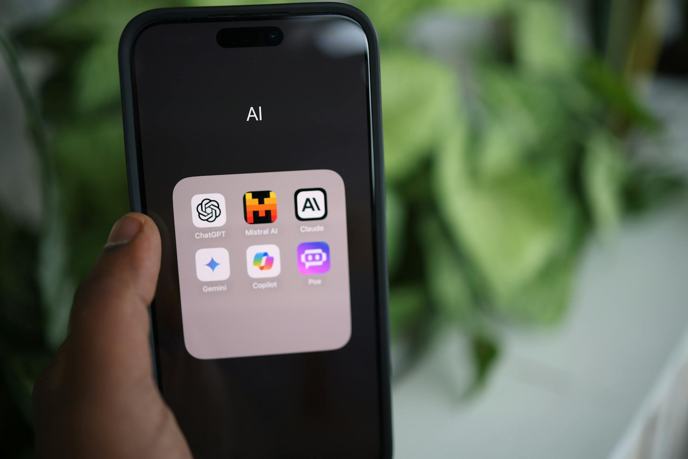

■ 说透 / SHUOTOU · 知览
SUBTITLE
App 不会立刻消失，先掉下去的，是它拦人的前台位置。

3月24日，OpenAI 把 ChatGPT 的商品发现和购物推了出来，用户能在对话里看图、比价、再点去商家页面。4月8日，Meta 发了 Muse Spark，说明它已经跑在 Meta AI app 和网站里，接下来继续铺向 WhatsApp、Instagram、Facebook、Messenger 和 AI 眼镜。再往前两周，Google 也把 Personal Intelligence 扩到 Search 的 AI Mode、Gemini app 和 Chrome，让搜索、浏览器、个人数据开始串线。
很多人还在把它们当功能更新。但真把手机掏出来用，你会发现变的压根不只是功能，变的是第一层被打开的地方。以前你要用 AI，脑子里先过一遍：开哪个 App。现在越来越多时候，问题刚冒出来，人已经在 搜索框、聊天窗口、浏览器标签页、社交 feed、摄像头 里了。
也就是说，AI 正在从一个目的地，散进一个个现成入口里。
DATA — 近 30 天最关键的三个入口动作
OpenAI｜3月24日：把商品发现和购物塞进 ChatGPT，对话里直接看商品图、做横向比较，还把 Walmart 这类商家的原生体验接进来
Meta｜4月8日：Muse Spark 已经跑在 Meta AI app 和网站里，后面继续进 社交产品和 AI 眼镜
Google｜3月17日：把 Personal Intelligence 扩到 Search、Gemini、Chrome，让推荐和搜索开始吃到你的 Gmail、Photos、购买记录
国内这边，夸克的“AI 超级框”把话也说得很直。它早就越过普通聊天框了，深度思考、搜索、研究、执行都想揉进一个总入口。你可以把这事理解成行业共识落地了：大家懒得再教用户“先打开我，再问问题”，都想在用户已经打开的那一层把事办完。
那为啥这会直接砸到很多 AI App 的生意呢？
因为过去一年半里，太多 AI App 的账都建在同一套公式上：买量拉新，套一个顺手的壳，再靠订阅把 API 成本盖过去。模型差不多，功能差不多，首页也差不多，写作、总结、翻译、PPT、搜索全往里塞。用户新鲜两次之后，就开始想一个问题：这事儿 ChatGPT、Gemini、夸克、Meta AI 里是不是也能干？
只要这个问题开始频繁出现，独立 App 的获客成本就会突然变得很难看。你花钱把人拉进来，上游平台一更新，用户回头就在原来的地方把同样的事做了。你辛辛苦苦做出来的”主功能”，在人家那边常常只是发布会里顺手带过的一项。
— 01 —
更狠的是，平台手里拿着的东西，独立 AI App 本来就没法平替。OpenAI 有模型和商品发现，Meta 有社交关系、公开内容和眼镜摄像头，Google 有 Search、Chrome、Gmail、Photos，夸克 有已经被养成习惯的超级框。你跟它们卷回答质量，已经很吃力了；你再跟它们卷分发位置、用户记忆、跨场景上下文，基本就是拿自行车追高铁。
Meta 这次把目标讲得挺明白。它盯上的，已经超出单独好用的 AI App 了：一个能读懂 Instagram、Facebook、Threads、WhatsApp 内容，又能顺着眼镜摄像头去看现实世界的助手。你问它去哪玩，它能把本地公开帖子拎出来；你问它买什么，它直接从社交内容和创作者种草里抽答案。说白了，它想抢的是你做决定临门一脚前看一眼的那层界面。
OpenAI 也是同一路数。商品发现一旦做起来，ChatGPT 就开始接管“我该买什么”这一步。别小看这一步，买东西这件事里，往往是付款前那下判断更值钱。谁先碰到那个时刻，谁就更像入口。
Google 的动作更系统层一点。它没有大张旗鼓喊“超级入口”，但 Search、Gemini、Chrome 这三层一打通，很多通用型 AI App 的处境就会很尴尬。你在搜索里问，在浏览器里看，再从 Gmail 和 Photos 里补上下文，事情已经开始往前跑了。
通用聊天壳 ── 回答质量差不出一代，留存却掉得飞快
轻任务拼盘 ── 写作、总结、翻译、PPT 这类功能最容易被平台一锅端
靠流量硬买的订阅产品 ── 上游一更新，买量模型立刻被挤坏
好，到这儿你可能会觉得，独立 App 快完了，接下来只剩几家巨头分蛋糕。
但有个反向证据，咱不能装没看见。
— 02 —
App 还是有价值，而且有些场景里，价值还挺硬。比如你在做法律文书、报税、处方、团队协作、设计交付、代码仓库、企业审批这类事时，用户真正在乎的，从来都不只是”模型回答得准不准”。他还在乎权限、留痕、版本、责任、交付格式、谁能改、谁来背锅。这些东西，搜索框和聊天窗口一时半会儿接不住。
还有一类产品，真正的硬差异不在模型，而在工作流和关系链。你让一个律师每天开浏览器问几次问题，和让他在固定系统里把案件、模板、客户、批注、账单全串起来，完全是两码事。前者像临时问路，后者已经是生产线了。生产线这玩意儿，搬一次家很疼，平台再强，也不会今天发个更新，明天就把别人整套流程吞掉。
所以更准确的说法应该是：AI App 不会消失，先往下掉的是那种”只靠一个对话框就想独立成生意”的轻模式。App 还会在，只是它会往后退，退到二线，退成某个垂直任务的容器，退成权限和工作流的壳，退成平台入口捕获意图之后的执行层。
这也是为什么”入口战争”这四个字，现在得换个读法。它不再只是大家去争一个桌面图标，也不只是争一个下载量榜单。真正值钱的，是用户第一句需求在哪冒出来，第二步动作在哪发生，第三个决定由谁来推。这三步一旦被搜索、社交、浏览器、眼镜、系统助手吃掉，很多 AI App 就算还活着，也很难再拿到最肥的那一口。
你现在再去看一堆 AI App 的首页，会有种很怪的感觉：它们都还在营业，图标也还亮着，但门口的人流已经悄悄改道了。人先去 ChatGPT 看商品，先去 Meta AI 看社交语境，再在 Google 或 夸克 里把任务扔出去。独立 App 接到的，越来越像后半程。
这门生意最危险的地方也在这儿。很多创业团队以为自己在卖 AI，真到今天才发现，自己卖的更像一个暂时站住的入口位置。一旦位置没了，功能又没厚到能撑起独立场景，订阅价格、投流效率、留存曲线，很快都会一起往下掉。
所以，AI App 这门生意当然还会有人做，但做法已经变了。接下来还值得做的，重点会从“再造一个更聪明的聊天框”挪开，挪到行业数据、真实工作流、交付责任、用户关系这些平台暂时吞不掉的深场景。
App 图标不会一夜之间从手机里消失，但它越来越像商场里的店面。真正把人流拦下来的，已经慢慢换成了门口的导购屏、扶梯口、停车场入口和导航系统。店还在，守门的人先换了。
· · ·
ZAYEN知览
说透 · SHUOTOU · 知览